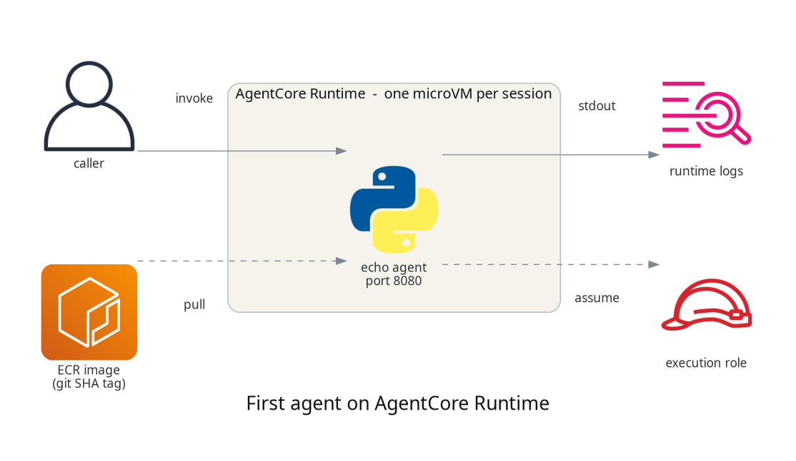

What AgentCore actually is, and getting a first agent running on it
TL;DR;
How to deploy an agent container to Amazon Bedrock AgentCore Runtime with Terraform, invoke it, and see what the platform gives you.
SOURCE CODE - All code for this post is available at: https://github.com/levantar-ai/demos/tree/main/agentcore/01-first-agent
Longer version
The gap between an agent that works in a notebook and an agent running in production is not the agent loop, it is everything around it. You need somewhere for it to run for potentially hours at a time, you need sessions isolated from each other, you need to know who the agent is acting as when it calls your APIs, and you need somewhere for the traces to go.
Amazon Bedrock AgentCore is AWS's answer to that operational shell, and it is worth being clear about what it is not, because the name misleads in two ways. It is not a framework, so you keep whatever you are already using (Strands, LangGraph, CrewAI or your own loop). It is also not tied to Bedrock models, because the runtime executes a container you give it and that container can call whatever model it likes.
What you actually get is a set of managed services: Runtime for serverless execution, Gateway for turning your APIs into MCP tools, Memory, Identity, managed Browser and Code Interpreter tools, and observability with baseline metrics and a runtime log group out of the box (full traces and agent telemetry need extra CloudWatch and OpenTelemetry configuration). This series works through all of them, one post and one deployable demo at a time, starting here with Runtime.
This is what we are deploying:

1 - The agent
The contract Runtime has with your container is small. Listen on port 8080,
answer POST /invocations with your agent logic, answer GET /ping with a
health response, and build for linux/arm64. There is no SDK requirement and
no blessed framework, which the demo agent proves by being about 40 lines
of Python standard library:
class Handler(BaseHTTPRequestHandler):
def do_GET(self):
if self.path == "/ping":
self._send(200, {"status": "Healthy"})
def do_POST(self):
if self.path == "/invocations":
payload = json.loads(self.rfile.read(length) or b"{}")
self._send(200, {"result": f"echo: {payload.get('prompt', '')}"})
It just echoes the prompt back, which keeps the platform behaviour easy to see. Later posts make it do something useful.
The Dockerfile is small, with one line that matters more than it looks:
FROM python:3.12-slim
ENV PYTHONUNBUFFERED=1
WORKDIR /app
COPY main.py .
EXPOSE 8080
USER nobody
CMD ["python", "main.py"]
NOTE:
PYTHONUNBUFFERED=1is what gets yourprint()output to CloudWatch promptly. Without it Python block-buffers stdout, so log lines can sit unflushed for a long time and your log streams look empty while the agent runs.
2 - The Terraform
The hashicorp/aws provider has native AgentCore support from v6.18, with a
family of aws_bedrockagentcore_* resources covering runtimes, gateways,
memory and the rest of the platform. The runtime is:
resource "aws_bedrockagentcore_agent_runtime" "agent" {
agent_runtime_name = "demos_agentcore_01_first_agent"
role_arn = aws_iam_role.runtime.arn
agent_runtime_artifact {
container_configuration {
container_uri = "${aws_ecr_repository.agent.repository_url}:${var.image_tag}"
}
}
network_configuration {
network_mode = "PUBLIC"
}
protocol_configuration {
server_protocol = "HTTP"
}
}
NOTE:
PUBLICis about the runtime's network connectivity (including outbound), it does not expose port 8080 to the internet. Invocation always goes through the AgentCore data-plane API under IAM.
NOTE: Runtime names must start with a letter and may contain letters, digits and underscores, no hyphens (
[a-zA-Z][a-zA-Z0-9_]*), unlike most AWS resources.
Alongside that there is an ECR repository with immutable tags, so deploys reference a git SHA rather than latest, and an execution role the runtime assumes to pull the image and write logs and telemetry, nothing more, because the echo agent needs nothing more. Five resources in total.
The deploy is a three-step bootstrap, because the image has to exist in ECR before the runtime that references it:
terraform apply -target=aws_ecr_repository.agent
aws ecr get-login-password | docker login --username AWS --password-stdin "$REGISTRY"
docker buildx build --platform linux/arm64 -t "$REPO:$GIT_SHA" --push agent/
terraform apply -var="image_tag=$GIT_SHA"
The runtime creates in around 10 seconds and comes up READY. Describing it
with aws bedrock-agentcore-control get-agent-runtime shows a few things
you get without asking, a workload identity created automatically for the
runtime, session lifecycle defaults of 900 seconds idle and 8 hours
maximum, and built-in versioning, each runtime update creates a new
agentRuntimeVersion, which here means every apply with a new SHA-tagged
container URI.
3 - Invoking it
aws bedrock-agentcore invoke-agent-runtime \
--cli-binary-format raw-in-base64-out \
--agent-runtime-arn "$RUNTIME_ARN" \
--runtime-session-id "$SESSION_ID" \
--payload '{"prompt": "hello"}' response.json
cat response.json
{"result": "echo: hello"}
NOTE: session IDs must be at least 33 characters, and the CLI needs
--cli-binary-format raw-in-base64-outor it will treat your JSON payload as base64.
Here are four invocations across two sessions from one test run:
| # | Session | Time | Observation |
|---|---|---|---|
| 1 | A (new) | 6.89s | cold start, microVM spin up plus container boot |
| 2 | A (warm) | 1.35s | the session's microVM is alive and waiting |
| 3 | B (new) | 4.53s | a new session pays its own cold start |
| 4 | B (warm) | 1.27s | roughly 0.5s server-side once warm |
The third row is the one to understand. AWS documents Runtime's isolation
model as one microVM per session, so a new session cannot reuse another
session's warm environment, and the observations here are consistent with
that, each new session paid a cold start and, in this run, produced its
own [runtime-logs] stream in the log group. The streams also show the
platform polling GET /ping between invocations, so implement your
health endpoint properly.
NOTE: the isolation is compute isolation. AgentCore does not know which of your users owns a session id, so your application is still responsible for authorizing who may use each session. Also, the log group the service creates is not managed by your Terraform, it outlives a destroy and keeps logs indefinitely unless you set retention on it.
Conclusion
Runtime is a small surface to get started with. A 40 line stdlib Python server and five Terraform resources gets you a deployed agent with per-session microVM isolation whose behaviour you can observe in the timings and the log streams.
The next post gives the agent its first real capability, tools, by putting AgentCore Gateway in front of an existing API and letting the agent call it as an MCP tool.
References: